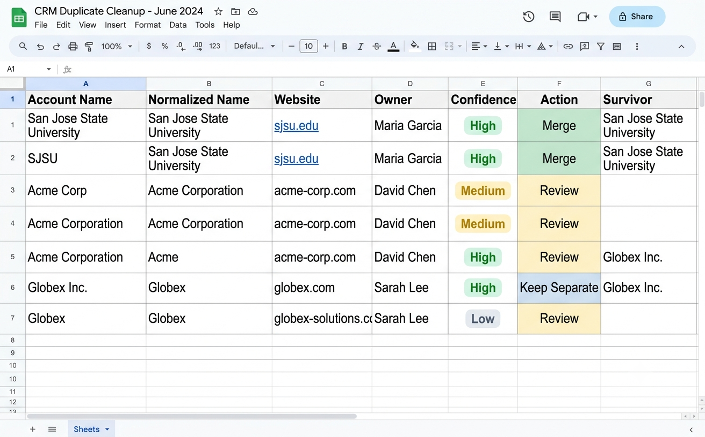

Resolved duplicate Account records across Salesforce by building a structured review process using name normalization, confidence-level grouping, and a merge decision framework - then created CRM governance standards to prevent future duplication.
